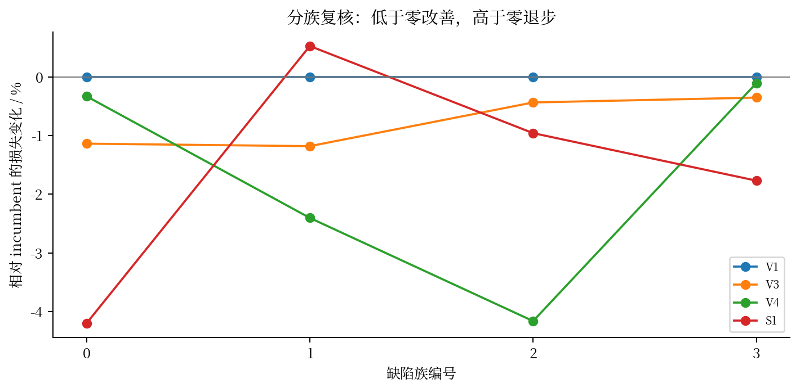
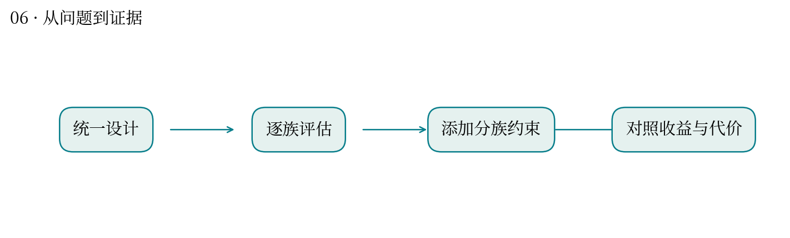
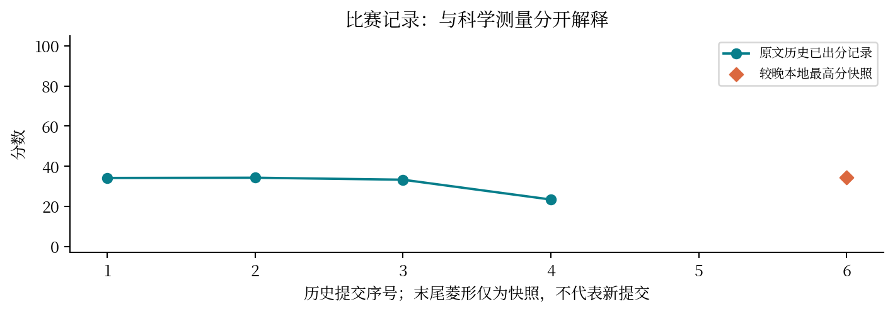

一个器件有四类薄弱环节，怎样避免只修好其中一个？
最高分快照：34.28 · 2026-10-12T01:11:24+08:00
离子输运、磁保持、迟滞和循环损伤受共同设计影响。降低总体最差损失，可能让原本较好的某类缺陷变差。
先做整体鲁棒搜索，再将缺陷族逐个展开评估；第 16 轮对各族增加上限，比较 incumbent、S6、S1、V3、V4。
审计撤回了“所有轴都改善”的早期说法：S6 的公开 worst64 反而恶化 0.438%；V3 四族都改善，但 H0 增加约 5.237%。这是有代价的改进。
总体分数会掩盖分组退步。“平均更好”“最坏更好”“所有指标更好”是三个不同命题。
与你做跨物种或跨学生群体评价相似：总平均提高不代表每个物种、每个能力群体都获益。需查看分层结果。
目前证据支持目标之间的权衡，不支持无条件支配；隐藏评审分数与公开目标的关系还不能完全拆解。



| attempt | 提交时间 | 分数 | 状态 |
|---|---|---|---|
| 52028 | 10-11 00:45:25 | 34.1592 | 已出分 |
| 53559 | 10-11 10:36:07 | 34.2797 | 已出分 |
| 54040 | 10-11 12:48:20 | 33.2912 | 已出分 |
| 54044 | 10-11 12:48:45 | 23.4129 | 已出分 |
| 54727 | 10-11 16:40:16 | — | 排队中 |
源文件 SHA256 见 证据清单；用 scripts/build.py 重建图表。